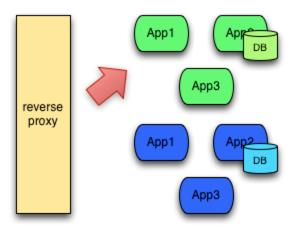
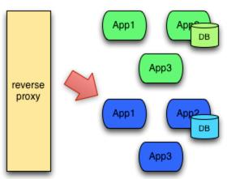
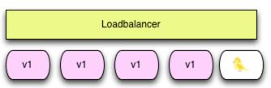
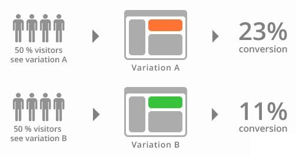

发布环境
蓝绿发布（Blue/Green Deployment）
定义：蓝绿部署是不停老版本，部署新版本然后进行测试。确认OK后将流量切到新版本，然
后老版本同时也升级到新版本。
特点：蓝绿部署无需停机，并且风险较小。
部署过程：
主：活动环境：负责对外提供服务，版本：v1.0
所有外部请求的流量都打到这个版本上。

备：非活动环境：版本：v2.0
版本2的代码与版本1不同(新功能、Bug修复等)。
将环境从版本1切换到版本2。

如版本2测试正常，就删除版本1正在使用的资源（例如实例），从此正式用版本2。
注意事项：
1.需要提前考虑数据库与应用部署同步迁移/回滚的问题
2.蓝绿部署需要有基础设施支持
3.在非隔离基础架构（ VM 、 Docker 等）上执行蓝绿部署，蓝色环境
和绿色环境有被摧毁的风险.
优势与不足：
优势：升级切换和回退速度非常快
不足：需要有2套基础设施,v2.0版本有问题，则对用户体验有直接影响
灰度发布/金丝雀发布
灰度发布是指在黑与白之间，能够平滑过渡的一种发布方式。AB test就是一种灰度发布方式，
让一部分用户继续用A，一部分用户开始用B，如果用户对B没有什么反对意见，那么逐步扩大范
围，把所有用户都迁移到B上面来。灰度发布可以保证整体系统的稳定，在初始灰度的时候就可
以发现、调整问题，以保证其影响度，而我们平常所说的金丝雀部署也就是灰度发布的一种方式

而软件更新实际上是将旧版本或者新版本创建一个软链接指向软件的工具路径
发布步骤：
1.准备好部署各个阶段的工件，包括：构建工件，测试脚本，配置文件和部署清单文件。
2.从负载均衡列表中移除掉「金丝雀」服务器。
3.升级「金丝雀」应用（排掉原有流量并进行部署）。
4.对应用进行自动化测试。
5.将「金丝雀」服务器重新添加到负载均衡列表中（连通性和健康检查）。
6.如果「金丝雀」在线使用测试成功，升级剩余的其他服务器（否则就回滚）。
A/B Testing
A/B 测试是用来测试应用功能表现的方法，例如可用性、受欢迎程度、可见性等等。 A/
B测试通常用在应用的前端上，不过当然需要后端来支持。

A/B 测试与蓝绿部署的区别在于， A/B 测试目的在于通过科学的实验设计、采样样本代表性、流量分割与小流量测试等方式来获得具有代表性的实验结论，并确信该结论在推广到全部流量可信；蓝绿部署的目的是安全稳定地发布新版本应用，并在必要时回滚。
优势和不足
优势：用户体验影响小，灰度发布过程出现问题只影响少量用户。
不足：发布自动化程度不够，发布期间可引发服务中断。
预发布验证：
新版本的代码先发布到服务器,和线上环境配置相同，只是未接入调度器
灰度发布：
可以基于主机，用户或者业务，又细分为地区，VIP和普通用户
滚动发布
在金丝雀发布基础上的进一步优化改进，是一种自动化程度较高的发布方式，用户体验比较平
滑，是目前成熟型技术组织所采用的主流发布方式
滚动发布：一般是取出一个或者多个服务器停止服务，执行更新，并重新将其投入使用。周而复
始，直到集群中所有的实例都更新成新版本。
特点
1.这种部署方式相对于蓝绿部署，更加节约资源——它不需要运行两个集群、两倍的实例数。我们可以部分部署，例如每次只取出集群的 20% 进行升级。
部署过程
滚动式发布一般先发1台，或者一个小比例，如2%服务器，主要做流量验证用，类似金丝雀 (Canary) 测试。
滚动式发布需要比较复杂的发布工具和智能 LB，支持平滑的版本替换和流量拉入拉出。
每次发布时，先将老版本 V1 流量从LB上摘除，然后清除老版本，发新版本V2，再将LB流
量接入新版本。这样可以尽量保证用户体验不受影响。
一次滚动式发布一般由若干个发布批次组成，每批的数量一般是可以配置的（可以通过发
布模板定义）。例如第一批 1 台（金丝雀），第二批 10%，第三批 50%，第四批 100%。
每个批次之间留观察间隔，通过手工验证或监控反馈确保没有问题再发下一批次，所以总
体上滚动式发布过程是比较缓慢的 (其中金丝雀的时间一般会比后续批次更长，比如金丝雀 10 分钟，后续间隔 2 分钟)。
回退是发布的逆过程，将新版本流量从 LB 上摘除，清除新版本，发老版本，再将LB流量
接入老版本。和发布过程一样，回退过程一般也比较慢的。
优势和不足
优势：用户体验影响小，体验较平滑。
不足：发布和回退时间比较缓慢。
发布工具比较复杂，LB 需要平滑的流量摘除和拉入能力